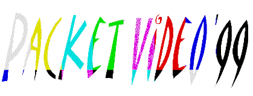

IEEE Signal Processing Society
IEEE Signal Processing Society
April 26-27, 1999
Davis Auditorium, Columbia University
New York City
Sponsored by:
AT&T, Columbia University, EURASIP
IEEE Signal Processing Society
IMDSP and MMSP Technical Committees
The workshop is devoted to presenting technological advancements and innovations in video transmission over packet networks, in particular, the Internet. Packet Video Workshops have been unique in providing a common ground for people from video coding and networking fields. The technical program of Packet Video '99 will consist of a keynote address entitled "Fat Pipes and Starry Nights" by Stephen Casner, submitted paper presentations, a poster session and a plenary session: "After Internet Telephony, Internet Television..."
We cordially invite you to take part in this workshop and look forward to seeing you in New York City in April 1999 for what will be a most rewarding and exciting experience! To register, please fax the registration form to: +1 212 932 9421, now. (If you can't print postscript,
registration form in ASCII.)PV'99 is scheduled to take place in the week following Picture Coding Symposium 99 (PCS' 99) which is being held in Portland Oregon, on 21-23 April 1999. For information on PCS'99 please contact:
pcs@pcs.ece.orst.edu.IMPORTANT DATES
EARLY REGISTRATION CLOSES: April 19, 1999.
Please print, fill and fax the registration form to: +1 212 932 9421
Authors
Best Paper Award
The author of the best paper, selected by the workshop participants' votes during the workshop, will receive: A $250 cash prize graciously donated by NEC USA, C&C Research Laboratories.
LOGISTICS
DIRECTIONS
The Schapiro Center for Engineering and Physical Science Research (Schapiro CEPSR) is at the northern end of Columbia University's Morningside Campus. The building is on 120th street, between Broadway and Amsterdam, about half-way down the block on the south side. Entering the building from 120th Street, you will come through a set of iron gates. Right in front of the gate there is an elevator that will take you to the 4th floor, where the Davis Auditorium is located. (Please note that elevator won't be available on Sunday reception, April 25th. Please use the steps. On top of the step is the Davis Auditorium) To reach the offices and labs on the 7th and 8th floors, you will need to change elevators on the fourth floor.
Directions to Columbia University
GENERAL CHAIR
M. Reha Civanlar
AT&T Labs - Research
100 Schultz Drive, 3-213
Red Bank, NJ 07701
USA
civanlar@research.att.com
PUBLICATION & LOCAL ARRANGEMENTS
Andrea Basso
AT&T Labs - Research
100 Schultz Drive, 3-219
Red Bank, NJ 07701
USA
basso@research.att.com
PACKET VIDEO' 99 INTERNATIONAL STEERING COMMITTEE
| John Arnold | University of New South Wales | Australia |
| Andrea Basso | AT&T Labs - Research | USA |
| Stephen Casner | CISCO | USA |
| Shih-Fu Chang | Columbia University | USA |
| Leonardo Chiariglione | CSELT | Italy |
| M. Reha Civanlar | AT&T Labs - Research, | USA |
| Jon Crowcroft | University College of London | UK |
| Mohammed Ghanbari | University of Essex, | UK |
| Barry G. Haskell | AT&T Labs - Research, | USA |
| Steven McCanne | U. C. Berkeley, | USA |
| Geoff Morrison | BT Labs | UK |
| Joerg Ott | University of Bremen | Germany |
| Sakae Okubo | Telecommunications Adv. Org. | Japan |
| D. Raychaudhuri | NEC Research, | USA |
| Amy Reibman | AT&T Labs - Research | USA |
| Henning Schulzrinne | Columbia University | USA |
| Gary Sullivan | PictureTel | USA |
| Toshitaka Tsuda | Fujitsu Labs | Japan |
| Thierry Turletti | INRIA | France |
| Stephan Wenger | Technical University of Berlin | Germany |
| Hiroshi Yasuda | Tokyo University | Japan |
{kind=link}